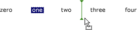

Практическое руководство. Индикация места вставки в элементе управления ListView в Windows Forms
Метка вставки в элементе управления ListView показывает пользователю, куда будут помещены перетаскиваемые элементы. Когда пользователь перетаскивает элемент на точку между двумя другими элементами, метка вставки показывает ожидаемое новое расположение элемента.
Note
Возможность метки вставки доступна только в Windows XP Home Edition, Windows XP Professional, Windows Server 2003, когда приложение вызывает метод Application.EnableVisualStyles. В предыдущих версиях операционных систем код, связанный с меткой вставки, не действует и метка вставки не отображается. Дополнительные сведения см. в разделе ListViewInsertionMark.
На рисунке ниже показана метка вставки.

В примере кода ниже показано, как использовать эту возможность.
Пример
using System;
using System.Drawing;
using System.Windows.Forms;
public class ListViewInsertionMarkExample : Form
{
private ListView myListView;
public ListViewInsertionMarkExample()
{
// Initialize myListView.
myListView = new ListView();
myListView.Dock = DockStyle.Fill;
myListView.View = View.LargeIcon;
myListView.MultiSelect = false;
myListView.ListViewItemSorter = new ListViewIndexComparer();
// Initialize the insertion mark.
myListView.InsertionMark.Color = Color.Green;
// Add items to myListView.
myListView.Items.Add("zero");
myListView.Items.Add("one");
myListView.Items.Add("two");
myListView.Items.Add("three");
myListView.Items.Add("four");
myListView.Items.Add("five");
// Initialize the drag-and-drop operation when running
// under Windows XP or a later operating system.
if (OSFeature.Feature.IsPresent(OSFeature.Themes))
{
myListView.AllowDrop = true;
myListView.ItemDrag += new ItemDragEventHandler(myListView_ItemDrag);
myListView.DragEnter += new DragEventHandler(myListView_DragEnter);
myListView.DragOver += new DragEventHandler(myListView_DragOver);
myListView.DragLeave += new EventHandler(myListView_DragLeave);
myListView.DragDrop += new DragEventHandler(myListView_DragDrop);
}
// Initialize the form.
this.Text = "ListView Insertion Mark Example";
this.Controls.Add(myListView);
}
[STAThread]
static void Main()
{
Application.EnableVisualStyles();
Application.Run(new ListViewInsertionMarkExample());
}
// Starts the drag-and-drop operation when an item is dragged.
private void myListView_ItemDrag(object sender, ItemDragEventArgs e)
{
myListView.DoDragDrop(e.Item, DragDropEffects.Move);
}
// Sets the target drop effect.
private void myListView_DragEnter(object sender, DragEventArgs e)
{
e.Effect = e.AllowedEffect;
}
// Moves the insertion mark as the item is dragged.
private void myListView_DragOver(object sender, DragEventArgs e)
{
// Retrieve the client coordinates of the mouse pointer.
Point targetPoint =
myListView.PointToClient(new Point(e.X, e.Y));
// Retrieve the index of the item closest to the mouse pointer.
int targetIndex = myListView.InsertionMark.NearestIndex(targetPoint);
// Confirm that the mouse pointer is not over the dragged item.
if (targetIndex > -1)
{
// Determine whether the mouse pointer is to the left or
// the right of the midpoint of the closest item and set
// the InsertionMark.AppearsAfterItem property accordingly.
Rectangle itemBounds = myListView.GetItemRect(targetIndex);
if ( targetPoint.X > itemBounds.Left + (itemBounds.Width / 2) )
{
myListView.InsertionMark.AppearsAfterItem = true;
}
else
{
myListView.InsertionMark.AppearsAfterItem = false;
}
}
// Set the location of the insertion mark. If the mouse is
// over the dragged item, the targetIndex value is -1 and
// the insertion mark disappears.
myListView.InsertionMark.Index = targetIndex;
}
// Removes the insertion mark when the mouse leaves the control.
private void myListView_DragLeave(object sender, EventArgs e)
{
myListView.InsertionMark.Index = -1;
}
// Moves the item to the location of the insertion mark.
private void myListView_DragDrop(object sender, DragEventArgs e)
{
// Retrieve the index of the insertion mark;
int targetIndex = myListView.InsertionMark.Index;
// If the insertion mark is not visible, exit the method.
if (targetIndex == -1)
{
return;
}
// If the insertion mark is to the right of the item with
// the corresponding index, increment the target index.
if (myListView.InsertionMark.AppearsAfterItem)
{
targetIndex++;
}
// Retrieve the dragged item.
ListViewItem draggedItem =
(ListViewItem)e.Data.GetData(typeof(ListViewItem));
// Insert a copy of the dragged item at the target index.
// A copy must be inserted before the original item is removed
// to preserve item index values.
myListView.Items.Insert(
targetIndex, (ListViewItem)draggedItem.Clone());
// Remove the original copy of the dragged item.
myListView.Items.Remove(draggedItem);
}
// Sorts ListViewItem objects by index.
private class ListViewIndexComparer : System.Collections.IComparer
{
public int Compare(object x, object y)
{
return ((ListViewItem)x).Index - ((ListViewItem)y).Index;
}
}
}
Компиляция кода
Для этого примера требуются:
- ссылки на сборки System и System.Windows.Forms;
Сведения о выполнении сборки этого примера из командной строки для Visual Basic или Visual C#, см. в разделе построение из командной строки или командной строки создания с помощью csc.exe. Можно также сборке этого примера в Visual Studio путем вставки кода в новый проект.